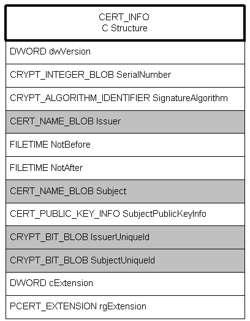
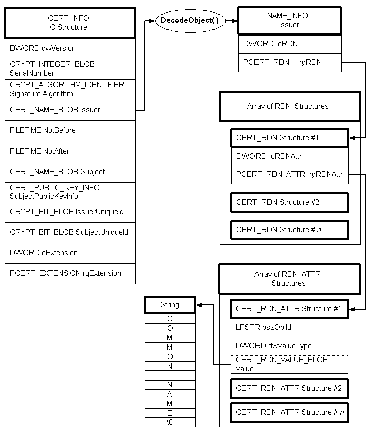

CryptoAPI supports the encoding and decoding of certificates. CryptoAPI includes an extensive, flexible system of functions and C structures that allow encoding and decoding in various ways. CryptoAPI supports standard X.509 certificate structure and standard Abstract Syntax Notation One (ASN.1) encoding to provide interoperability with other systems.
For an overview of encoded data, see Encoded and Decoded Data.
A certificate context, CERT_CONTEXT, is a C structure that contains an encoded member, a handle to a certificate store, a pointer to the original encoded certificate BLOB, and a pointer to a CERT_INFO C structure.
The CERT_INFO structure is the heart of the certificate. It contains, in direct form and in encoded form, all the basic information in the certificate. The following illustration shows the CERT_INFO structure with all of its encoded members shown as shaded.

The IssuerUniqueID and SubjectUniqueID members are part of the X.509 version 2 certificate implementation but are seldom used. Certificate extensions in version 3 replace the functionality of these members.
If the information contained in the encoded (shaded) members Issuer and Subject is needed, those members must be decoded. Use CryptDecodeObject to decode these members. The following illustration shows the process of decoding one of these members.

In the illustrated case, the CryptDecodeObject function creates a CERT_NAME_INFO structure, an array of CERT_RDN structures, a corresponding array of CERT_RDN_ATTR structures, and a string that contains the name. Members of the CERT_RDN_ATTR structure determine the contents of the string. For example, if the pszObjId member is 2.5.4.3, the string contains a common name. If it is 2.5.4.10, the string would contain an organization name. For a list of these object identifiers (OIDs), see CERT_RDN_ATTR.
The dwValueType member contains information about the type of string. If it is CERT_RDN_PRINTABLE_STRING, the value member contains a byte-width, zero-terminated character string. If it is CERT_RDN_UNICODE_STRING, the string is a double-width (word-sized) character string.
For a detailed process for encoding and decoding certificates, see Encoding a CERT_INFO Structure and Decoding a CERT_INFO Structure.
Â
Â